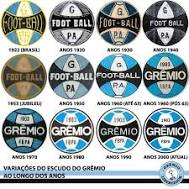

O Grêmio Foot-Ball Porto Alegrense (conhecido apenas por Grêmio e cuja sigla é FBPA) é um clube de futebol brasileiro da cidade de Porto Alegre, no Rio Grande do Sul, fundado em 15 de setembro de 1903 por Candido Dias da Silva. É considerado um dos maiores clubes do Brasil e da América do Sul. Suas cores são azul, preto e branco. O clube tem como alcunhas Imortal Tricolor, Tricolor dos Pampas, Tricolor Gaúcho, Rei de Copas e Clube de Todos.[2] Já foi campeão da Copa Libertadores da América em três ocasiões, o que o torna o clube brasileiro com mais conquistas nesta competição, ao lado dos paulistas Palmeiras, São Paulo e Santos, e vice em duas outras oportunidades.[9] Foi o primeiro clube fora da região Sudeste a conquistar títulos de dimensão continental e mundial, sendo campeão da América e do Mundo em 1983.[10] Também é bicampeão da Recopa Sul-Americana, tendo conquistado este torneio em todas as vezes em que o disputou. Conquistou ainda dois Campeonatos Brasileiros da Série A, um Campeonato Brasileiro da Série B, cinco Copas do Brasil[11] e uma Supercopa do Brasil, além de uma Copa Sul e um Campeonato Sul-Brasileiro. No âmbito estadual, já foi campeão quarenta e uma vezes do Campeonato Gaúcho, três vezes da Recopa Gaúcha e uma vez da Copa FGF.[12][13] O clube ocupa, em 2021, a terceira colocação no ranking da CBF e a mesma colocação no ranking da Conmebol.[14] Além do time profissional de futebol masculino, o clube conta com categorias de base masculinas do sub-8 ao sub-20,[15] uma equipe de transição e uma equipe feminina.[16] O clube já revelou vários futebolistas de renome internacional ao longo de sua história, como Arthur, Everton, Emerson, Lucas Leiva, Douglas Costa, Renato Portaluppi, Anderson, Ânderson Polga e Ronaldinho Gaúcho.[17][18] No desempenho financeiro, o Grêmio registrou superávit em seus balanços financeiros de 2016 a 2020, após ter apresentado déficits entre 2013 e 2015.[19] Em 2020, as receitas superaram as despesas em trinta e oito milhões de reais. O endividamento diminuiu de 429 milhões de reais em 2019 para 396 milhões no ano seguinte.[19] O faturamento cresceu entre 2015 e 2019, enquanto o endividamento diminuiu no mesmo período.[20] A dívida de curto prazo do clube somava sessenta milhões de reais em setembro de 2020.[21] O Grêmio é um dos clubes de futebol mais populares do Brasil, com uma torcida estimada em mais de oito milhões de pessoas no país.[22] Conforme pesquisa por amostra realizada pelo Datafolha em agosto de 2019, 4% da população brasileira torce para o Grêmio, que tem a quinta maior torcida do país, empatado com Vasco e Cruzeiro.[23] De acordo com pesquisa realizada em 2021 pela empresa DataTempo, o clube possui quase o dobro de torcedores que seu rival.[24][25] Seu quadro social, em junho de 2020, era formado por 85 mil contribuintes adimplentes.[26] Seu estádio é a Arena, inaugurada em dezembro de 2012. Antes, o clube teve os estádios da Baixada (de 1904 a 1954) e Olímpico, inaugurado em 1954 e rebatizado em 1980 como Olímpico Monumental. O Grêmio possui dois centros de treinamento: o CT Hélio Dourado, localizado em Eldorado do Sul e utilizado pelas categorias de base, e o CT Luiz Carvalho, no qual o elenco profissional masculino treina. Além disso, o clube aluga, desde abril de 2018, o estádio Antônio Vieira Ramos para treinamentos e jogos do time feminino.
 .903-1953: O início, do amadorismo até a profissionalização Foto do primeiro time gremista, em dezembro de 1903 Foto do primeiro time gremista, em dezembro de 1903. 23 homens de braços cruzados com camisetas de longas longas em listras nas cores marrom e azul, gravatas brancas e calças azul escuro. 11 deles estão em pé, seis ajoelhados e e seis sentados no chão. Equipe do Grêmio que conquistou o título do Campeonato Gaúcho de 1932. Em pé: Poroto, Nenê, Sardinha I, Foguinho, (), Heitor, Luiz Carvalho e Lacy. Agachados: Amâncio, (), Sardinha II, Eurico lara, Dário e Comani. Após o esvaziamento da bola da partida, o paulista Candido Dias da Silva, um comerciante sorocabano, emprestou a pelota que trazia. Em troca do favor, ele recebeu lições de como se fundar um clube de futebol;[27] oito dias depois, trinta e dois homens se reuniram no Salão Grau, restaurante de um hotel da rua 15 de Novembro (atual Rua José Montauri), no Centro de Porto Alegre e fundaram o Grêmio Foot-Ball Porto Alegrense.[28] O primeiro jogo do recém fundado clube ocorreu em 6 de março de 1904, contra o FussBall Club Porto Alegre, fundado no mesmo dia que o Grêmio. Em uma jornada dupla (dois jogos na mesma tarde), o Grêmio garantiu as suas duas primeiras vitórias, vencendo ambas por 1 a 0.[27] Em 20 de julho de 1904, o uniforme foi mudado para um modelo metade azul metade preto.[27] A primeira competição disputada foi a Taça Wanderpreiss, com a primeira edição em 6 de março de 1904, vencido pelo Grêmio contra o Fussball Club Porto Alegre.[28] Alguns anos depois, em 18 de julho de 1909, o primeiro jogo contra o Sport Club Internacional, que mais tarde se tornaria o seu arquirrival, foi disputado, com vitória de 10 a 0 para os tricolores. No ano seguinte, foi criada a 1ª Liga de Clubes de Porto Alegre, por ideia vinda do Grêmio. Posteriormente, foi realizado o Campeonato Citadino de Porto Alegre, o qual o Tricolor venceu ininterruptamente de 1911 a 1915. Mesmo amador, o clube já jogava contra equipes de outros estados, ou até mesmo países.[28] Na década seguinte, a hegemonia do clube continuou. O pentacampeonato metropolitano (1919-1923) e o título de três Campeonatos Gaúchos de 1921, 1922 e 1926, Os anos 1930 continuaram dando ânimo ao desenvolvimento do Grêmio. Conquistas como o tetracampeonato de Porto Alegre 1930 a 1933 e o bicampeonato gaúcho 1931 e 1932. 8 homens em pé com camisetas listradas verticalmente nas cors azul, preto e branco. 6 homens agachados na frente. Local: gramado de um estádio pequeno. A Revista do Globo em 1932 exaltava o elenco do Grêmio tricampeão do Citadino de Porto Alegre. Time do Grêmio que ergueu o 15º título do clube: o Citadino de 1933, fazendo 5 a 3 sobre o Internacional, no Estádio da Baixada. Os gols gremistas foram anotados por Luiz Carvalho (2), Nenê (2) e Artigas. O auge de tal era foi 1935, com o famoso Grenal Farroupilha, nome dado, na verdade, ao campeonato citadino inteiro, por ocasião do centenário da Revolução Farroupilha. Ao ganhar do tradicional rival, o Tricolor sagrou-se campeão. Esta foi a última partida de Eurico Lara, que havia começado a jogar pelo clube em 1920, transformando-se em uma lenda do clube. Portanto, tal época proveu ao clube tanto títulos quanto o início da sua tradição e respeito.[28][29] Após uma onda de profissionalizações do futebol na América do Sul, no início da década de 1930, o Rio Grande do Sul resolveu também migrar para esse novo modo de gerenciar o futebol. No ano de 1937, foi criada no estado a Especializada, departamento profissional filiado à Federação Brasileira de Futebol. Esta fez um campeonato metropolitano não relacionado com o antigo citadino, realizado pelo Federação Rio-Grandense de Desportos (atual Federação Gaúcha de Futebol), que era filiada à Confederação Brasileira de Desportos. Até 1939, mesmo ganhando os três metropolitanos, o Grêmio não se classificou para o Campeonato Gaúcho, por causa de tal divergência, é dirimida nos anos 1940. Com a criação do Conselho Nacional de Desportos, o profissionalismo foi oficialmente adotado pelo Tricolor.[28] No final de 1949, o Grêmio realizou a primeira temporada no exterior de um time gaúcho ao ir para a América Central.[30] Em 1952, o Grêmio contratou pela primeira vez em sua história um atleta negro, Tesourinha, na época jogador veio do Vasco.[31] Contudo, na década de 1910, já havia jogadores afro-descendentes no clube, porém, não de forma oficial: Antunes (1912),[32] Adão Lima (de 1925 a 1935), Hélio e Mário Carioca (ambos na década de 1940) e Hermes da Conceição (1947 a 1950), já haviam jogado no Tricolor, anteriormente.[30] Em 1953 e 1954, o Grêmio fez a sua segunda excursão internacional (desta vez pelo México), Equador e Colômbia.[28] Em abril de 1953, foi iniciada, finalizada apenas em 1954.[30] Telêmaco Frazão de Lima era o treinador.[30]
.2003-2011: Batalha dos Aflitos e a 4ª final de Libertadores Tcheco foi camisa 10 e capitão na partida entre Grêmio vs. Boca Juniors pela final da Copa Libertadores de 2007. No ano de seu centenário, em 2003, o Grêmio escapou do descenso apenas na última rodada, com uma vitória sobre o Corinthians, por 3 a 0. A partir desse ano, o Grêmio enfrentou o auge de sua crise financeira. Por causa da situação deixada pela ISL e pelas administrações passadas, o clube acabou atingindo uma situação insustentável. O Tricolor acabou devendo em encargos trabalhistas para jogadores, funcionários e para clubes.[41] Em 2004, com pouco dinheiro em caixa e uma dívida de 101,7 milhões, o time novamente foi montado sem dinheiro e saiu fraco.[42] No Campeonato Brasileiro, conseguiu vencer apenas nove jogos, entre quarenta e seis possíveis e foi rebaixado à Série B pela segunda vez.[43] As dívidas contraídas pelo clube são tidas como fator capital para o rebaixamento do clube.Em 2005, ainda sem dinheiro em caixa, o Grêmio continuava em situação quase falimentar. A dívida ascendia a 108 milhões, sendo 56 milhões a curto prazo.[42] Paulo Odone havia assumido a presidência do clube em lugar de Flávio Obino, cujo mandato acabara no ano anterior. Para tentar contornar a situação, o Hugo De León, ídolo do clube foi contratado como treinador.[44] No Campeonato Gaúcho, o time foi mal. Para tentar inverter a situação, Mano Menezes foi contratado para o lugar do uruguaio. André Lima foi contratado em 21 de junho de 2010, e mais tarde seria o autor do primeiro gol na Arena do Grêmio. Na Série B, o time foi mal no início, mas se classificou entre os oito primeiros e conseguiu disputar o quadrangular final. Nesta fase da competição, desperdiçou chances de ganhar da Portuguesa de Desportos e do Santa Cruz. A ascensão teve de ser decidida contra o Náutico, no Estádio dos Aflitos, em Recife. Depois de ter dois pênaltis marcados contra (desperdiçados pelo adversário) e quatro jogadores expulsos, o Tricolor, ainda assim, conseguiu marcar o gol do título, feito por Anderson. Desse modo , o time conseguiu a subida novamente à Série A, no jogo que ficou conhecido como A Batalha dos Aflitos.[28] Na Copa Libertadores 2007, o time chegou até a final, mas foi derrotado pelo Boca Juniors (3 a 0 fora e 0 a 2 em casa). No Campeonato Brasileiro de 2007, o sexto lugar foi a colocação final.[45] Já no Campeonato Brasileiro de 2008, a equipe comandada por Celso Roth chegou a liderar o campeonato por 17 rodadas, ao assumir a posição devido a súbita queda de desempenho do Flamengo. O clube manteve a boa campanha atingindo uma série de 12 jogos sem derrotas. Curiosamente, a série foi quebrada com uma derrota para o Flamengo.[46] Entretanto, esta derrota não foi suficiente para o Grêmio perder a liderança. O clube decidiu até a última rodada o título contra o São Paulo, mas acabou ficando com o vice-campeonato. Com a classificação para a Copa Libertadores de 2009, nas semifinais, ao perder pelo placar agregado de 5 a 3 (3 a 1 fora e 2 a 2 em casa) para o Cruzeiro. No intervalo de agosto de 2008 e julho de 2009, segundo o ranking da IFFHS, o Grêmio na nona colocação do ranking de clubes do mundo, sendo o melhor brasileiro e segundo melhor sul-americano, atrás somente do Estudiantes de La Plata, então campeão da Copa Libertadores daquele ano.[47] Em 2010, o clube chegou a semifinal da Copa do Brasil mas foi eliminado pelo Santos após vencer por 4 a 3 em casa e perder por 3 a 1 na Vila Belmiro. 2012-2020: A Arena, o retorno do Rei de Copas e o Tricampeonato da Libertadores Nos primeiros anos da Arena, havia grandes expectativas sobre o retomada de títulos importantes após um jejum que durava anos (desde o Tetracampeonato da Copa do Brasil de 2001).[48] Para isso, a direção apostava em nomes experientes como Zé Roberto, Elano, André Santos, Hernán Barcos, Dida, todos com passagens pelas suas seleções, na tentativa de trazer títulos de expressão mas sem sucesso. De 2012 a 2015 pode-se destacar as boas campanhas no Brasileiro de 2013 ao se estabelecer na 2ª colocação final e na Copa do Brasil de 2013 e 2014, alcançando as semifinais. Também podemos citar a primeira vitória gremista em Grenais na Arena, pela goleada de 4 a 1 em jogo válido pelo Campeonato Brasileiro de 2014 e também a maior goleada em Grenal por Campeonatos Brasileiros e do Século XXI, jogo que ficou conhecido como Grenal dos 5 a 0, no Campeonato Brasileiro de 2015.